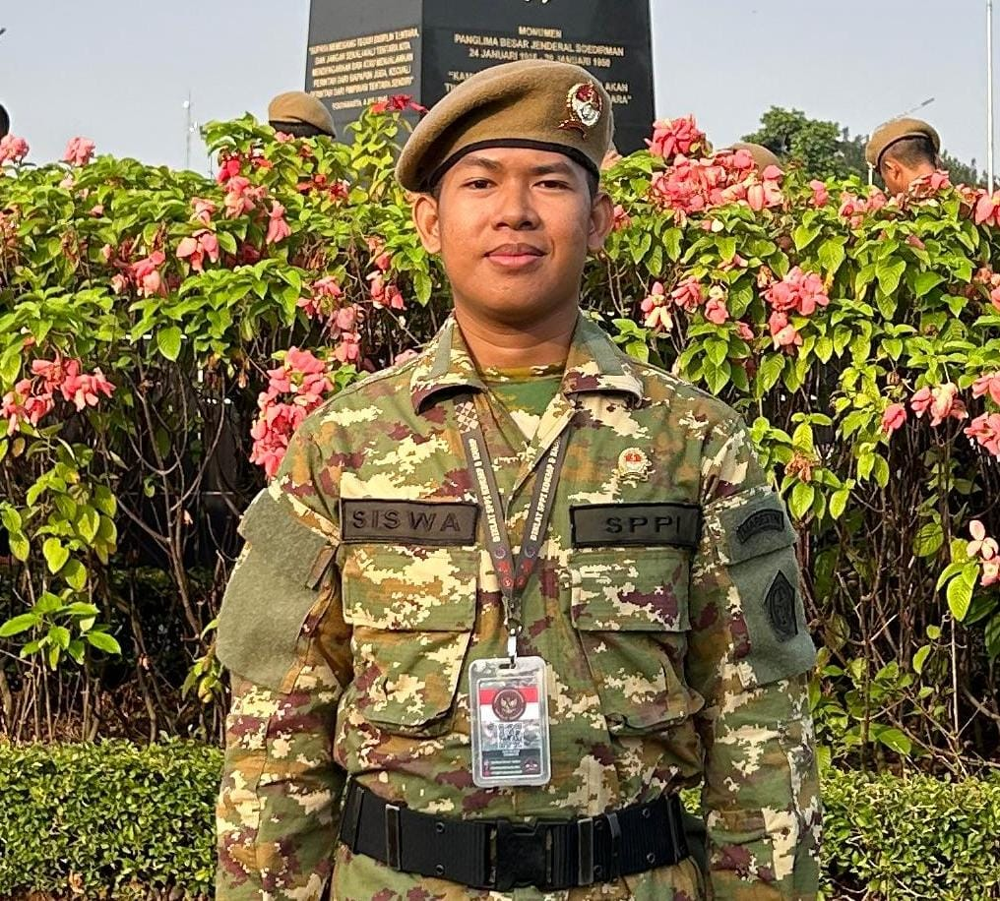

215 haPadi
Portal Resmi KDKMP
KDKMP Desa Taman Endah
KDKMP Desa Taman Endah
Bersama Membangun Ekonomi Desa
Membangun ekosistem ekonomi desa melalui koperasi yang profesional, transparan, dan berpihak pada kesejahteraan anggota.
✓ Koperasi berbasis anggota
✓ Pelayanan transparan
✓ Penggerak ekonomi desa
183Anggota
3.372Penduduk
3Komoditas Potensial
Tentang Kami
Koperasi milik warga, untuk kemajuan warga
Koperasi Desa/Kelurahan Merah Putih (KDKMP) Desa Taman Endah adalah wadah ekonomi bersama yang didirikan untuk membantu mengembangkan perekonomian masyarakat desa. Koperasi ini hadir agar potensi warga, mulai dari hasil pertanian, usaha kecil, hingga kebutuhan simpan pinjam, dapat dikelola secara terorganisir dan saling menguntungkan.
Dengan semangat gotong royong, KDKMP Desa Taman Endah berkomitmen meningkatkan kesejahteraan anggota melalui pelayanan yang jujur, transparan, dan berkelanjutan.
🤝
Gotong Royong
🌱
Berkelanjutan
🔍
Transparan
"Dari desa, oleh warga, untuk kesejahteraan bersama."
Semangat KDKMP Desa Taman Endah
Profil Resmi
KDKMP Taman Endah dalam Data
Informasi profil berikut disusun berdasarkan data Simkopdes yang kamu kirim.
Data profil ditampilkan sebagai informasi publik KDKMP dan dapat diperbarui sesuai data terbaru.
0Jumlah penduduk
0Anggota koperasi
0Potensi padi
0Potensi ubi kayu
0Potensi jagung
Identitas
Koperasi Desa Merah Putih Taman Endah
- AlamatJl. Pardi Sumarto, Taman Endah, Purbalinggo, Kabupaten Lampung Timur, Lampung, 34192
- Nomor AHUAHU-0061834.AH.01.29.TAHUN 2025
- Tanggal21 Juni 2025
- Emailkopdesmerahputihtamanendah@gmail.com
Pengelola
Manager KDKMP

Jaya Saputra, S.T.Manager
Pengelolaan operasional koperasi dilaksanakan bersama pengurus dan pengawas sesuai struktur organisasi KDKMP Desa Taman Endah.
Tata Kelola
Siapa melakukan apa?
Ringkasan struktur pengelolaan ditampilkan agar masyarakat lebih mudah memahami peran utama dalam KDKMP. Ketentuan resmi tetap mengikuti struktur dan keputusan koperasi.
PengurusArah dan pengelolaan koperasi
ManagerPengelolaan operasional
PengawasPengawasan koperasi
Struktur Organisasi
Pengurus KDKMP Desa Taman Endah
 Heri PurwantoKetua
Heri PurwantoKetua BasirKetua
BasirKetua Muhammad SarojiWakil Ketua Bidang Usaha
Muhammad SarojiWakil Ketua Bidang Usaha Ellya Apria NingsihWakil Ketua Bidang Anggota
Ellya Apria NingsihWakil Ketua Bidang Anggota Puji MuhaiminSekretaris
Puji MuhaiminSekretaris Rudi HermantoBendahara
Rudi HermantoBendahara MasidahAnggota
MasidahAnggota
Pengawas
 Suyitno
Anggota
Suyitno
Anggota
 Paijo
Anggota
Paijo
Anggota
 Eni Purwani
Anggota
Eni Purwani
Anggota
Pengawas KDKMP Desa Taman Endah
Suyitno
Anggota
Paijo
Anggota
Eni Purwani
Anggota
Visi & Misi
Arah dan tujuan koperasi kami
Visi
"Menjadi koperasi desa yang mandiri, profesional, dan mampu menjadi penggerak ekonomi masyarakat Desa Taman Endah."
1
Meningkatkan kesejahteraan anggota.
2
Mengembangkan usaha koperasi yang berkelanjutan.
3
Mendukung produk dan usaha masyarakat desa.
4
Memberikan pelayanan yang baik dan transparan.
Potensi Desa
Dari potensi desa menjadi kekuatan ekonomi bersama
Potensi lokal menjadi salah satu dasar pengembangan usaha dan layanan KDKMP Desa Taman Endah.
5,5 haUbi Kayu
2,5 haJagung
PerikananPotensi lokal
Rencana Pengembangan Usaha
Bidang usaha yang dipersiapkan
Rencana pengembangan usaha KDKMP yang dapat disesuaikan dengan keputusan resmi, kesiapan operasional, dan kebutuhan anggota.
🛒
Gerai Ritel
Menyediakan kebutuhan pokok dan sembako dengan harga bersaing bagi warga desa.
🌾
Produk Pertanian
Menampung dan memasarkan hasil pertanian warga agar memiliki nilai jual yang lebih baik.
💰
Simpan Pinjam
Membantu permodalan usaha anggota melalui layanan simpan pinjam yang mudah dan transparan.
📦
Distribusi Produk Anggota
Membantu distribusi dan pemasaran produk usaha anggota koperasi ke pasar yang lebih luas.
ℹ️
Informasi unit usaha dapat diperbarui sesuai perkembangan dan keputusan resmi KDKMP Desa Taman Endah.
Kegiatan & Informasi Terbaru
Perkembangan KDKMP Desa Taman Endah
Halaman ini disiapkan untuk menampilkan kegiatan, pengumuman, dan perkembangan koperasi secara berkala.
Menunggu dokumentasi publik terbaru
Dokumentasi kegiatan akan ditambahkan
Belum ada dokumentasi kegiatan yang dipublikasikan pada website. Pengunjung dapat menghubungi pengurus untuk memperoleh informasi kegiatan terbaru.
Keanggotaan
Bergabung dalam ekonomi bersama
Menjadi anggota berarti ikut memiliki, memanfaatkan layanan, dan berpartisipasi dalam perkembangan koperasi.
Mengapa menjadi anggota?
Dimiliki BersamaKoperasi dibangun untuk kepentingan anggota dan masyarakat desa.
Memanfaatkan LayananAnggota dapat memanfaatkan unit usaha dan layanan koperasi sesuai ketentuan.
Ikut Mengembangkan KoperasiPartisipasi anggota membantu memperkuat ekonomi bersama.
Berpeluang Mendapatkan SHUMendapatkan bagian SHU sesuai ketentuan koperasi dan partisipasi anggota.
Informasi Pendaftaran
Untuk informasi persyaratan, simpanan, hak dan kewajiban anggota, silakan hubungi pengurus atau pengelola KDKMP Desa Taman Endah.
Hubungi Kami
KDKMP Desa Taman Endah
-
Alamat Jl. Pardi Sumarto, Taman Endah, Purbalinggo, Kabupaten Lampung Timur, Lampung, 34192
-
WhatsApp 0895 7041 4149
-
Email kopdesmerahputihtamanendah@gmail.com
Lokasi
📍Temukan KDKMP Desa Taman Endah
Ada pertanyaan seputar koperasi?
Hubungi kami langsung melalui WhatsApp, tim KDKMP Desa Taman Endah siap membantu.
Pusat Informasi
Pertanyaan yang sering ditanyakan
Temukan jawaban singkat mengenai profil, keanggotaan, pengelolaan, dan informasi dasar KDKMP Desa Taman Endah.
KDKMP adalah Koperasi Desa Merah Putih Taman Endah, yaitu wadah ekonomi bersama untuk membantu mengembangkan perekonomian masyarakat Desa Taman Endah.
Manager KDKMP Desa Taman Endah adalah Jaya Saputra, S.T.
Berdasarkan data profil KDKMP yang tersedia, terdapat 183 anggota.
Anggota dapat memanfaatkan layanan dan unit usaha koperasi sesuai ketentuan serta berpartisipasi dalam pengembangan koperasi.
Detail hak, kewajiban, dan ketentuan anggota dapat dikonfirmasi kepada pengurus.Informasi persyaratan dan prosedur pendaftaran anggota belum tersedia secara lengkap di database website.
Untuk informasi resmi, silakan hubungi pengurus KDKMP.Rencana pengembangan usaha yang ditampilkan meliputi Gerai Ritel, Produk Pertanian, Simpan Pinjam, dan Distribusi Produk Anggota. Pelaksanaannya mengikuti keputusan dan kesiapan KDKMP.
Status setiap rencana usaha dapat diperbarui sesuai perkembangan dan keputusan resmi KDKMP Desa Taman Endah.Potensi yang tercantum antara lain padi, ubi kayu, jagung, dan perikanan.
Pengurus dapat dihubungi melalui WhatsApp 0895704144149.
Jl. Pardi Sumarto, Taman Endah, Purbalinggo, Kabupaten Lampung Timur, Lampung, 34192.
Nomor AHU yang tercantum adalah AHU-0061834.AH.01.29.TAHUN 2025.
Nominal simpanan wajib dan perhitungan SHU anggota belum tersedia pada informasi website saat ini.
Jangan gunakan angka dari sumber lain sebagai angka resmi KDKMP. Hubungi pengurus untuk informasi terbaru.
Belum menemukan jawabannya?
Tanyakan langsung kepada Asisten AI KDKMP berdasarkan informasi yang tersedia.